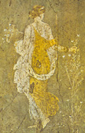

главная  персоналии
персоналии  Анита
Анита
главная |

Личность в историикраткая энциклопедияПроект «Личность в истории» посвящен людям — современникам грандиозных исторических событий, носителям редких качеств или людям, взгляды которых опередили их время. |
|||||
Коротко |
Статьи |
Персоналии |
Литература |
||
Анита |
|||||
|
Кто бы ты ни был, садись под зелеными ветвями лавра, Анита |
 Весна из Стабии. |
||||
Биографическая справкаАнита (III век до н. э.) древнегреческая поэтесса. Биографических данных, к сожалению, не сохранилось. Однако, во вступительном стихотворении к свому «Венку» — сборнику греческих эпиграмм — Мелеагр Гадарский, перечисляя поэтов, чьи «цветы», вплетены в венок, в первую очередь называет «лилии Аниты». ??з творчестваНа статую Афродиты у моряЭто участок Киприды. Отсюда приятно богине (перевод Л. Блуменау) Эпитафия воинуВ битве отвага, Проарх, тебя погубила, и смертью (перевод Л. Блуменау) Статуя ГермесаЗдесь стою я, Гермес, средь сада с его ветерками (перевод Ю. Шульц) Эпитафия трем девушкамНе допустив над собою насилия грубых галатов, которых заставил Эту судьбу разделить кельтов жестокий Арес. (перевод Л. Блуменау) Список литературы
|
|||||
|